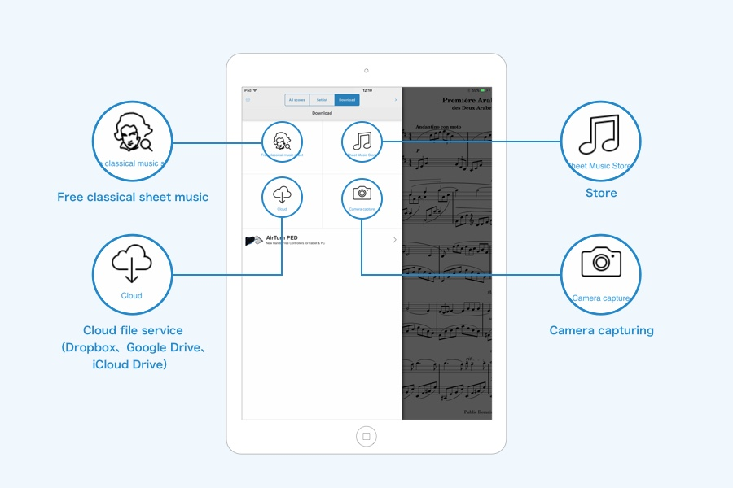
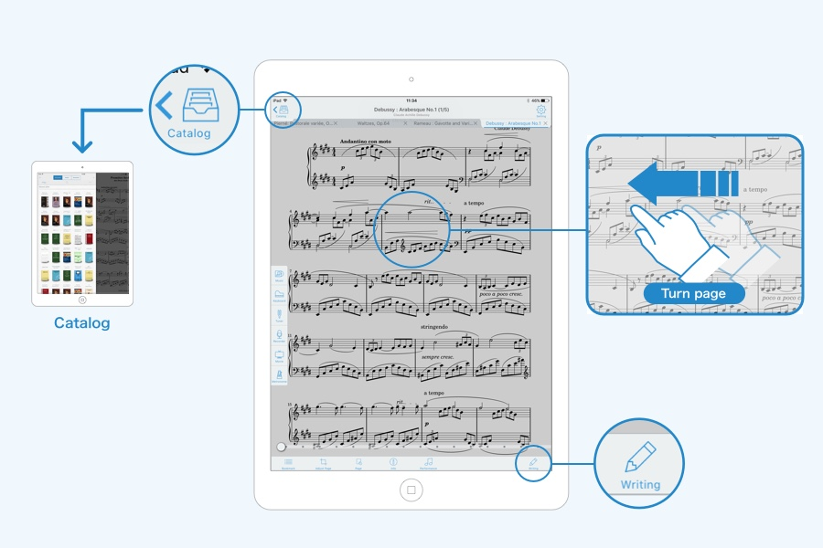

PIASCORE 避坑指南——用了半年才踩明白的六个雷
从纸质扫描到远程翻页，从 IMSLP 下载到图章标注，这篇把 PIASCORE 常见的翻车点、症状和解法一次说清，新手看完少走弯路。
开头：这软件看着简单，其实有几个坑
我用 PIASCORE官网 看 iPad 上的电子乐谱快半年了，从刚接触时觉得「不就是个 PDF 阅读器加个手写吗」，到现在能稳稳跑完整场演出，中间踩过的坑不少。PIASCORE 的核心定位确实清楚——它就是个看谱加标注的工具，通过 官方下载 就能拿到 iOS 版，别指望它代替专业扫描、别让它兼职音频播放器、更别把 PiaScore Air 当成万能遥控器。
下面六个坑，是我花了不少时间才摸明白的，照着防能省你很多来回折腾的功夫。
坑一：用摄像头扫描想代替专业扫描工具
症状：拍完一堆纸质乐谱导入 PIASCORE，放大一看文字发虚、页面歪歪扭扭，演出时后排根本看不清。
原因：PIASCORE 的拍照扫描功能定位是快速临时导入，它不做智能裁切矫正、不做高清 OCR、也没有专业降噪。你拿着 iPad 直接怼乐谱拍，只要光线稍有不均、角度稍微斜一点，扫出来的 PDF 就是糊的。我第一次给儿子扫钢琴考级的乐谱，就是想省一步直接用 PIASCORE 扫，结果到了琴房老师说这谱子没法看。
解法：先用专业扫描 App 处理。Scanbot、Scanner Pro、百度扫描全能王都行——把页面拍正、裁齐、OCR 识别一下文字，存成高质量 PDF，再通过云盘或 iTunes 导进 PIASCORE。已经有出版社电子版的就更省事，直接传输不用扫描。另外拍的时候一定要让纸面充满屏幕但别切边，自然光下正对纸面，别让 iPad 和桌面呈斜角。

坑二：IMSLP 下载选了分辨率最低的版本
症状：同一首贝多芬月光奏鸣曲，朋友的 iPad 上字又大又清楚，我的那版放大到两三百倍就糊了。
原因：IMSLP 上的古典乐谱很多作品都有多个扫描版本——有的是出版社授权的高清版，有的是爱好者自己扫的低清版。PIASCORE 直接拉 IMSLP 源，但默认不一定帮你挑最高清的。我刚用的时候懒得看，点第一个版本就下，后来才发现那是 72DPI 的老扫描，而旁边那个 300DPI 的才是演出能用的。
解法：进入作品详情页后别着急点下载，先看看文件大小和描述。同一份乐谱优先选扫描分辨率高、文件体积大的版本。另外有些大型总谱几十 MB，下载需要耐心，别以为卡住了就关掉重开——PIASCORE 支持后台下载，等一会儿就行。真碰到下载失败的，大概率是网络波动或文件下架，换个时间或换个版本再试。
坑三：PiaScore Air 配对了但翻页没反应
症状：iPhone 上 PiaScore Air 显示「已连接」，iPad 那边状态栏也亮了，但点 iPhone 屏幕就是不翻页，演出前五分钟急得满头汗。
原因：这个坑是位置问题——iPad 上的 PIASCORE 必须正在显示某份乐谱的内容视图，远程翻页才生效。如果 iPad 停在目录界面、正在打开乐谱的过渡动画中，或者锁屏黑屏了，PiaScore Air 发的指令石沉大海。我第一次在乐队排练时就栽在这里，iPhone 连接正常但死活翻不动，后来反应过来 iPad 还停在目录页没进乐谱。
解法：演出前提前把 iPad 打开并进到目标乐谱的浏览界面，确认屏幕常亮。如果还是没反应，先确认两台设备在同一个 Wi-Fi（或都开了蓝牙），距离近一些，关掉干扰蓝牙的设备（蓝牙耳机、无线键盘之类的），实在不行就两台都重启一次。官方说有效距离大约 10 米，别躲到后台幕后去操作。
坑四：升降号手写不如图章好用
症状：在乐谱上手写升降号和力度记号，写出来的降号像个歪歪扭扭的逗号，ff 两个 f 大小不一，整个标注区看着很凌乱。
原因：手写笔适合自由绘图和长文本，但标准化的音乐符号（升降号、力度记号、反复记号这些）手写很难写得规范。我一开始坚持手写，觉得图章太机械，结果练了半个月降号还是写不标准。后来试了图章工具才发现，它的符号库是直接内嵌标准乐谱字体的，点一下就精准插入，位置还能随时调整。
解法：打开手写工具栏点 Stamp 图标，里面按类别分好指法、升降号、力度、反复记号和表情术语——pp/p/mp/mf/f/ff 一套齐的，cresc.、decresc.、dim. 这些渐强渐弱的表情术语也有。插入后先放大页面再调整位置，精准度比手写高太多。手写笔留着写个人风格的注释和表情提示就行，符号标准化交给图章。更多符号分类和使用细节可以在 PIASCORE文档 里查到。

坑五：扫描完不检查页面顺序
症状：排练时翻到一半发现第五页和第六页倒过来了，前面还有一张重复扫了的空白页，尴尬得想找个地缝钻进去。
原因：扫描完所有页面后，PIASCORE 会自动进入预览视图，但默认是直接点 Save 就存——很多人懒得检查缩略图顺序。我第一次扫六页乐谱，第一页和第二页拍反了，直到演出时才发现。另外拍的时候手抖多按了一次快门，多出来一页也没删。
解法：拍完全部页面后别着急 Save，花五秒钟扫一眼缩略图列表。长按拖动可以调整顺序，双指旋转修正方向偏差，点右上角 X 删掉重复页，右下角 + 补充漏掉的页。纸质乐谱扫完再扫一遍真的很费时间，但预览视图里花点力气调整是最划算的投入。
坑六：以为 PIASCORE 能当音频播放器
症状：想在 PIASCORE 里边看谱边听节拍器或伴奏，发现根本找不到播放按钮，翻遍设置也没有。
原因：PIASCORE 从设计之初就是纯看谱加标注的工具，它不支持音频播放、不支持音频同步翻页、也不带任何练习辅助功能。我之前在 App Store 里看到用户评论吐槽说「没有音频播放功能太鸡肋」，其实那是搞错了产品定位——真要音频配合的话得用 MuseScore 或 PlayScore 这类带播放功能的软件，然后把乐谱导回 PIASCORE 看。
解法：如果需要音频辅助练习，用其他软件生成音频文件或带播放功能的乐谱，再把 PDF 导进 PIASCORE。PIASCORE 只管显示和标注，别让它干设计之外的事。
防坑清单（速查版）
- 纸质乐谱扫描前先用专业 App 处理成高清 PDF，再导进 PIASCORE
- IMSLP 下载时仔细看版本描述，优先选分辨率高的版本
- PiaScore Air 配对成功后确认 iPad 已进入乐谱浏览界面再使用
- 升降号、力度记号用图章工具，手写留给自由注释
- 扫描完成后花五秒检查缩略图顺序和方向，别直接 Save
- PIASCORE 只管看谱和标注，音频播放得靠别的软件
知道这些坑之后，这软件其实相当省心。它的定位清晰、功能聚焦，该有的都做到位了——只要别让它承担不属于它的期待，日常练琴和演出用着真的挺舒服。顺带一提，PIASCORE 相关的乐谱整理和配置笔记分散在GitHub、Gitee、GitCode 三个仓库，不同网络环境下各挑一个能访问的就行。